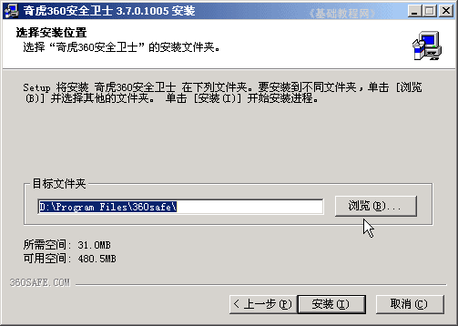

360安全卫士操作基础
一、下载安装 返回目录
机子使用时间久了，速度会逐渐变慢，或者安装/卸载后产生一些无用的文件，这时候我们需要对自己的电脑进行一些检查和清理，我们以360安全卫士来学习一下，电脑的安全防护和清理；
1、下载安全卫士
1）360安全卫士是一个免费的电脑防护软件，操作简便、功能强大，你可以到它的官方主页和一些大的网站里下载；
华军下载：http://www.onlinedown.net/soft/50671.htm
2）进入下载页面以后，找到360安全卫士，点击“立即下载”或者选择一个较快的下载链接，下载以后得到一个安装文件；
3）下载以后得到一个安装文件，如果是压缩文件，先解压一下；
2、安装程序
1）找到下载的setup文件，图标是一个电脑（如果是压缩包先解压出来），双击运行它，出来一个安装向导；
2）点“下一步”继续，在出来的许可协议面板点“我接受”按钮，继续安装；
3）在接下来的安装位置里，默认是C:\盘，也可以点“浏览”按钮，选择安装到其他分区中，点“安装”继续；

4）然后进行文件的提取和复制，完成后进入设置页面；
5）在接下来的开启保护设置中，默认开启了防止恶评软件、网页防漏、系统关键、U盘病毒的保护，
这些以后还可以修改，这儿选默认，点“下一步”继续；
6）然后出来“完成”页面，可以去掉第二个勾，然后点“完成”按钮，立即开始运行安全卫士；
6）安装完以后，可以在开始菜单里留一个快捷方式，其他的可以去掉；
本节学习了下载和安装奇虎360安全卫士的基本方法，如果你成功地完成了练习，请继续学习下一课内容；
本教程由86团学校TeliuTe制作|著作权所有
基础教程网：http://teliute.org/
美丽的校园……
转载和引用本站内容，请保留版权信息和本站链接。